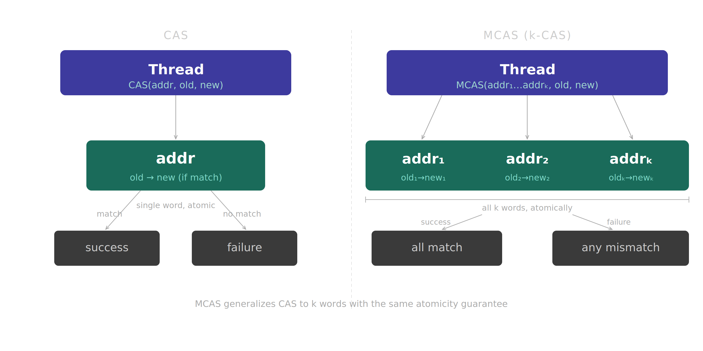
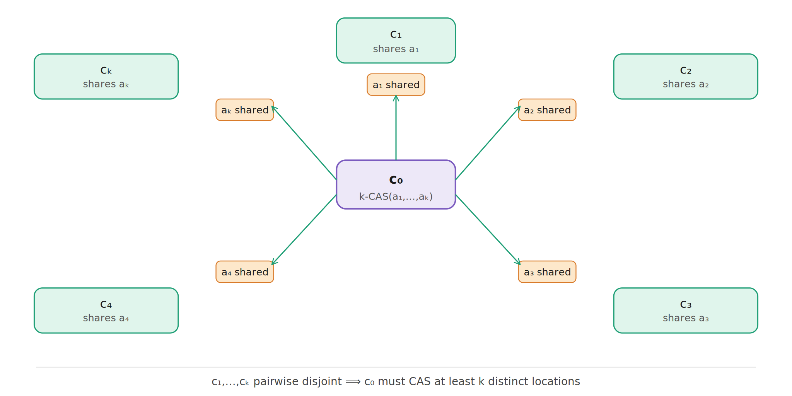
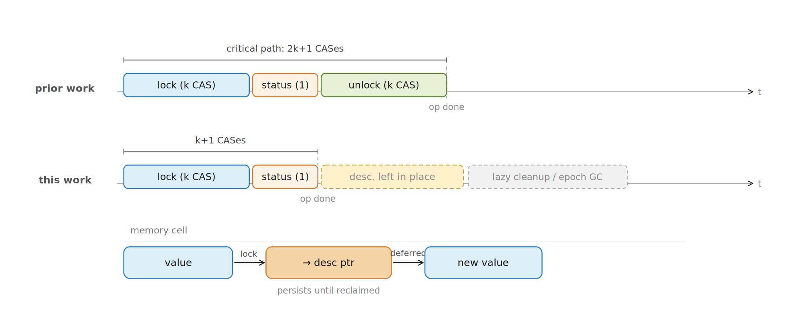
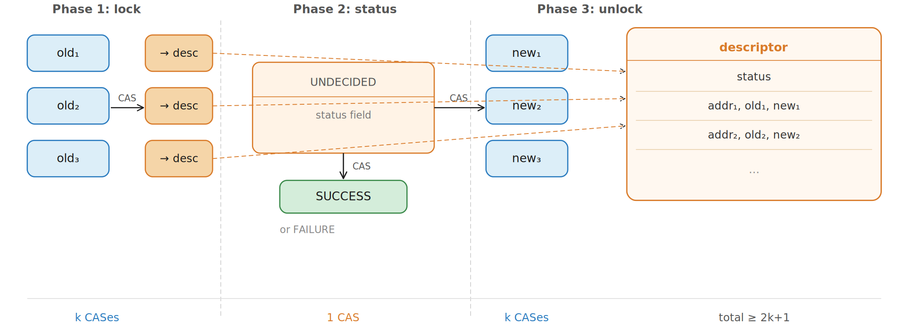
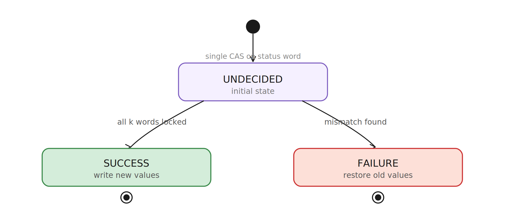
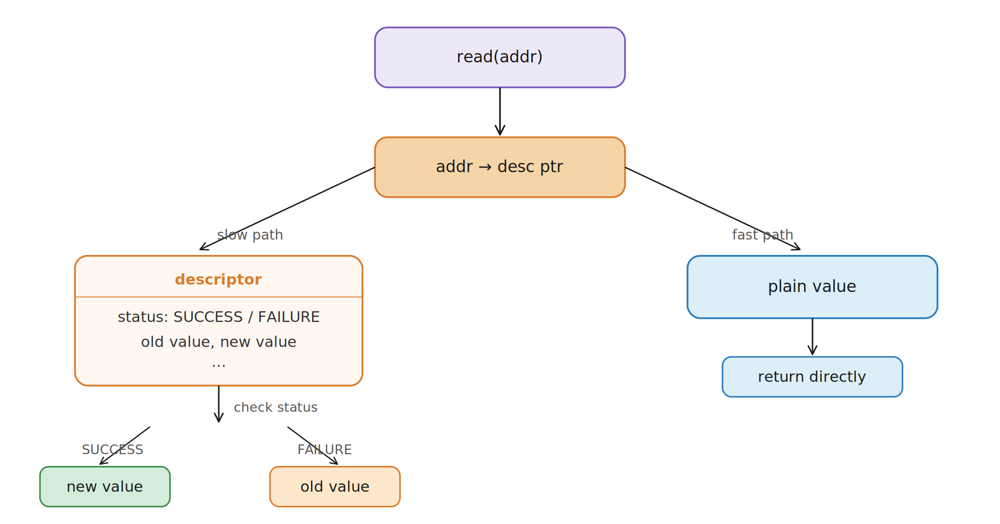
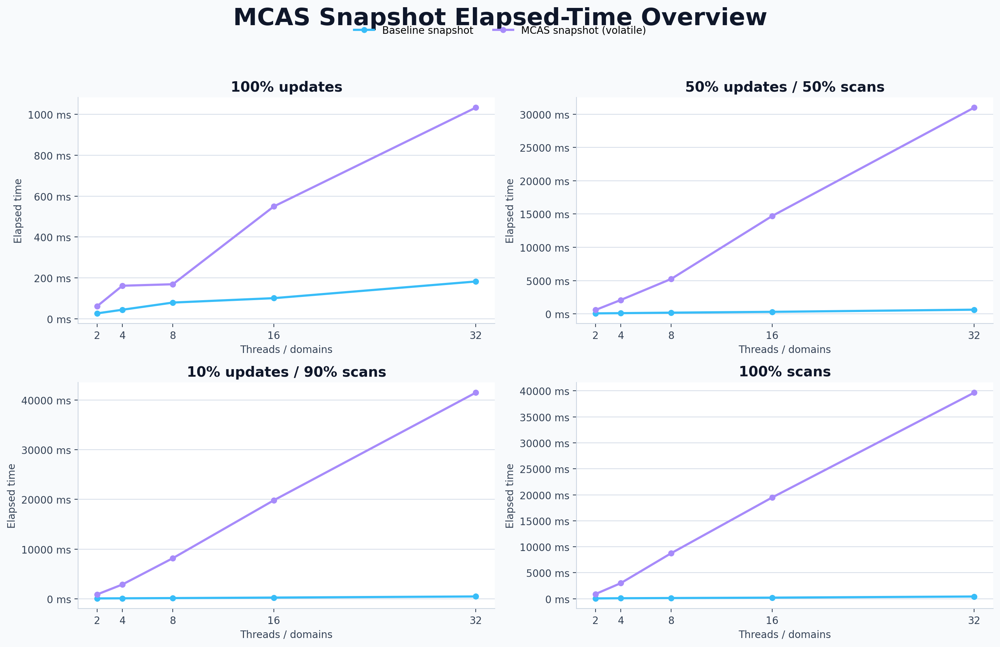
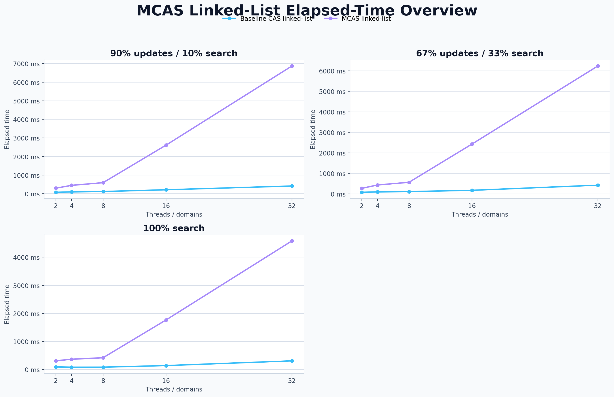
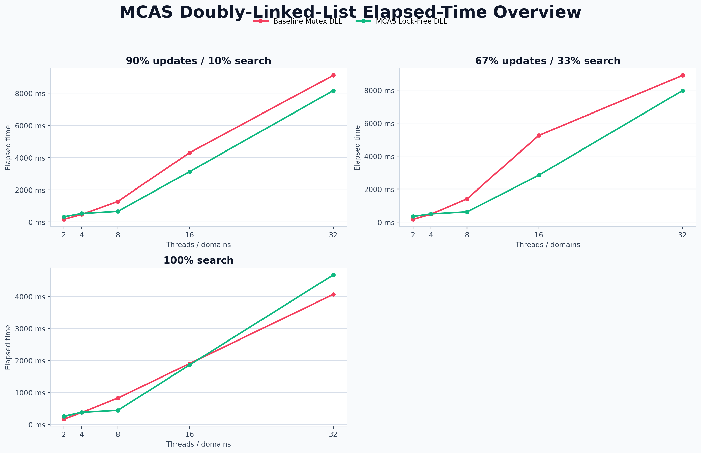
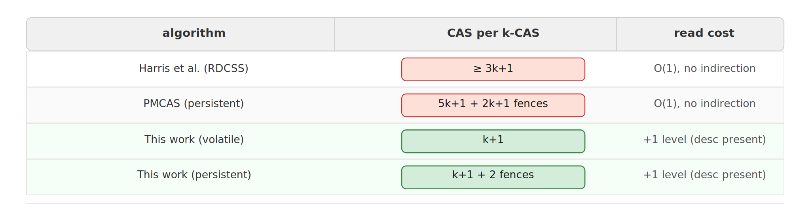

The Atomic Juggling Act (or: Why One Hand Is Never Enough)
Imagine you're trying to perform a complex magic trick on stage. In your right hand, you're juggling three
flaming chainsaws. In your left, you're trying to quickly swap out a deck of cards while blindfolded. Now,
imagine the rules of the universe dictate that you can only ever move exactly one finger at a
time. Welcome to the infuriating world of concurrent programming with single-word Compare-and-Swap (CAS).
CAS is the undeniable workhorse of modern hardware. Want to update a counter safely? Boom, done. Want to
push a node onto a stack? Easy. But the moment you need to atomically update two different things
at once (like moving a node from a list to a tree while updating a size counter), CAS suddenly turns into
that unhelpful coworker who replies "Not my department" and clocks out.
Multi-word CAS (MCAS) is the multi-armed superhero we actually need. It proposes a
daring bargain: if all \(k\) memory locations look exactly how we left them, we swap them all in one
glorious, indivisible swoop. If even a single word has been touched by a meddling neighbor? The
entire operation aborts. All or nothing. No awkward half-states.

Comparison: Hardware CAS vs Logical MCAS
This article is a deep dive into the paper Efficient Multi-word Compare and
Swap by Guerraoui et al., and our daring OCaml 5 reproduction of its core magic. We'll start with
the elegant theory, build up to some dastardly clever tricks (like descriptors and lazy cleanup), and
finally throw the whole thing into the benchmarking blender to see if it survives.
Roadmap
What We Are Going to Build in Your Head
Here is what we'll cover: first the primitive, then the lower bound, then the algorithmic
trick, then our OCaml version and the empirical story.
CAS takes one address, one expected value, and one desired value.
It checks whether the address still contains the expected value; if
yes, it atomically writes the desired value. Otherwise it fails. The
whole operation is indivisible: other threads see either the old
state or the new state, never a half-state.
MCAS generalizes this to \(k\) locations. An operation receives a
list of triples:
\[
\langle addr_1, old_1, new_1 \rangle,\ldots,
\langle addr_k, old_k, new_k \rangle.
\]
It succeeds only if every \(addr_i\) still stores \(old_i\). If all
checks pass, all locations move to \(new_i\). If even one check
fails, no logical update should occur.
Operations on disjoint target words should not fight over unrelated shared
bottlenecks.
Traffic Control
If I'm updating A and B, and you're updating Y and Z,
we shouldn't bump into each other in the hallway.
Technical Deep Dive: What
is DAP?
Disjoint-Access Parallelism (DAP) is the "social distancing" rule for memory.
It guarantees that if two threads are working on completely different parts of memory,
they should never have to coordinate or wait for each other.
Without DAP, a simple update to address A might force every thread in the system to check a
global lock or status word,
creating a bottleneck even if they are only interested in address Z.
This is already enough to see why MCAS is useful. A concurrent
linked structure often needs to update multiple pointers and flags
as one logical action. Without MCAS, the programmer simulates
multi-location atomicity using marks, helping records, retry loops,
and sometimes a quiet prayer to the scheduler. MCAS packages that
discipline into one primitive.
But MCAS is not a free lunch. Software MCAS is
itself built from ordinary reads, writes, and single-word CAS. The
paper asks a very practical question: if CAS instructions are
expensive, how few CASes can a lock-free MCAS implementation get
away with?
Part II: the lower bound
Why You Cannot Cheat Below \(k\) CASes
The paper first proves a limitation: any lock-free,
disjoint-access-parallel implementation of \(k\)-CAS has an
execution in which some operation performs CAS on at least \(k\)
different locations. This is the "physics says no" part of the
story.
The proof uses a star configuration. There is one
central call \(c_0\), and then \(k\) spoke calls \(c_1,\ldots,c_k\).
Each spoke conflicts with \(c_0\) on one target word, but the spokes
are pairwise disjoint from each other. It is a beautiful little trap:
\(c_0\) must somehow coordinate with every spoke, but the spokes
should not coordinate with each other if the algorithm is truly
disjoint-access-parallel.

Lower Bound: Star Configuration Proof
🔍
The proof idea, without the formal machinery (Click to expand!)
The paper uses a bivalency-style argument. Very roughly, if two
conflicting operations could proceed while CASing completely
disjoint implementation locations, then their steps would commute:
swapping the order of their next steps would not change shared
state in a way that lets the implementation distinguish the
executions. That creates a linearizability problem. So in a
critical state, conflicting calls must be about to CAS some common
implementation location.
Applying this to the star configuration forces the central call
\(c_0\) to overlap, in its CAS range, with every spoke. Since the
spokes are disjoint from each other and the algorithm is required
to be disjoint-access-parallel, these overlaps cannot all be
squeezed into fewer than \(k\) relevant CAS locations without
causing unrelated operations to interfere.
The conclusion is not just "CAS is hard." It is sharper:
\(k\)-CAS really needs to touch, with CAS, at least \(k\) places in
some execution if we want lock-freedom and disjoint-access
parallelism. So the best possible software MCAS cannot hope to be
dramatically below \(k\). The game becomes: can we get close?
The paper's answer: yes. The proposed volatile
algorithm uses \(k+1\) CAS operations in the common uncontended
case: \(k\) CASes to acquire the target words, plus one CAS to
decide the operation's status.
Why the lower bound is more than a counting trick
It is tempting to read the theorem as "of course \(k\) words need
\(k\) CASes." But the proof is doing something subtler. An MCAS
implementation is allowed to use helper metadata, descriptors,
global tables, indirection, clever encodings, and whatever other
machinery the programmer invents. The theorem says that if we also
demand lock-freedom and disjoint-access parallelism, then some
execution still forces a \(k\)-CAS call to perform CAS on at least
\(k\) distinct implementation locations.
That matters because without such a lower bound, an algorithm that
uses \(k+1\) CASes might merely be "pretty good." With the lower
bound, it becomes "one CAS away from the floor." This is the moment
where the paper stops being only an implementation paper and starts
feeling like a careful map of the design space.
Prior MCAS designs
Why \(k+1\) CASes Is a Big Deal
Before this paper, descriptor-based MCAS algorithms were already a
known species. The usual pattern was sensible: acquire the words,
decide the status, then clean up the words. Sensible, however, does
not always mean cheap. If every target word needs one CAS to acquire
and one CAS to clean up, we are already at \(2k\), before counting
the status word or any extra machinery needed to avoid ABA.
The Harris-Fraser-Pratt style algorithm uses RDCSS
(restricted double-compare single-swap) to acquire words safely.
That helps with correctness, but it costs additional CAS
operations. PMwCAS-style implementations are robust and practical,
but in the volatile case they are commonly described as requiring
\(3k+1\) CASes per uncontended \(k\)-CAS. Sundell's approach gets to
\(2k+1\), but still pays for cleanup on the hot path.
The
Evolution of MCAS Complexity
Approach
Uncontended CAS cost
Main idea
What hurts
Harris-Fraser-Pratt style
\(3k+1\)
RDCSS-like acquisition plus status plus cleanup
More CASes per target word
Sundell-style MCAS
\(2k+1\)
Acquire, decide, then write final values back
Cleanup remains on the critical path
Guerraoui et al.
\(k+1\)
Acquire words and decide status; cleanup later
Reads may see descriptor indirection
Persistent extension
\(k+1\) plus 2 fences
Persist acquisitions before persisting status
Recovery and flush ordering must be handled carefully
Note: \(k\) represents the number of target memory locations in the MCAS operation.
The important line is the third one. The new algorithm does not win
by removing descriptors. It wins by letting descriptors remain
meaningful after the operation is complete. Once the parent status
is final, a word descriptor is no longer an unfinished lock. It is a
compact certificate of the logical value.
The trade-off is honest: updates become cheaper
because they skip immediate cleanup, but reads sometimes follow an
extra pointer. The paper's experiments show that under MCAS
contention, fewer CASes usually more than compensate for this
indirection.
Part III: the algorithm
The Big Trick: What If We Just Do Not Unlock Immediately?
Older descriptor-based MCAS algorithms tend to have three phases.
First, lock or acquire the \(k\) target words by replacing their
contents with descriptors. Second, flip a status word to say whether
the MCAS succeeded or failed. Third, unlock every word by replacing
descriptors with the final values. That last phase costs another
\(k\) CASes.

The paper's lovely move: leave completed descriptors in place and
clean them later. The operation is already decided once the status
changes.
Guerraoui et al. observe that the unlocking phase does not need to
sit on the critical path. Once the descriptor status is finalized,
the logical value of every acquired word is already determined. If
the status is successful, the word logically contains the new value.
If failed, it logically contains the old value. The physical memory
cell may still contain a descriptor pointer, but logical reads know
how to interpret it.
Classic shape
Lock + Decide + Unlock
\(k\) acquisitions, one status CAS, and \(k\) cleanup CASes.
Safe but slow
Efficient shape
Lock + Decide
\(k\) acquisitions and one status CAS. Cleanup can wait.
Fast and loose

Algorithm: Descriptor Phases
Descriptors: the shared operation record
The descriptor is the little passport carried by the operation. It
records which addresses are involved, what old values are expected,
what new values should appear on success, and the operation's global
status. The per-word descriptors point back to their parent MCAS
descriptor.
Status is the switch
The status word starts as active. If acquisition of all words
succeeds, the status changes to successful. If any target word has a
mismatching value, the status changes to failed. That status CAS is
the decisive moment: after it happens, every descriptor can be read
consistently.

MCAS Status Transitions
Reads become smarter
Deferred cleanup shifts some complexity into reads. A read may find
a plain value, in which case it returns immediately. Or it may find
a descriptor. If the descriptor's parent is active and belongs to
another operation, the reader helps that MCAS finish. If the
descriptor is already finalized, the reader returns the old or new
value depending on the parent status.

Read Indirection: Helping Protocol Diagram
The core algorithm
The MCAS operation scans the sorted target words. For each one, it
obtains the logical current value using readInternal.
If the word is already owned by the same descriptor, it continues.
If the logical value does not match the expected old value, the
operation cannot succeed. Otherwise it tries to install its word
descriptor with a CAS. After the loop, one status CAS decides the
operation.
What about ABA and cleanup?
The paper's deferred unlocking is not just a trick for saving CASes.
It also changes how ABA protection is handled. Older algorithms
often use RDCSS-like machinery in the acquisition phase to ensure
that the descriptor is still active. Guerraoui et al. lean on the
memory reclamation discipline: descriptors are not detached and
reused until it is safe, so descriptor identity can remain
meaningful. Cleanup becomes lazy and amortized instead of a
per-operation tax on the hot path.
💾
Persistent-memory side quest (Click to unpack!)
The paper also extends the construction to persistent memory. The
key result is that the persistent version still uses \(k+1\) CASes
in the common uncontended case and needs only two persistence
fences per call. The idea is to persist acquired descriptors
before persisting the finalized status, so recovery can interpret
any pending operation consistently.
Our OCaml implementation is volatile only, but this part of the paper is useful because it
shows the descriptor protocol isn't just a parlor trick for RAM; it survives the apocalypse (a
crash) too.
Cleanup, reads, and persistence
The Descriptors Do Not Vanish. They Retire.
Leaving descriptors in place is the move that saves \(k\) cleanup
CASes, but it raises three reasonable questions. Do reads become
permanently slower? Can descriptors pile up in memory forever? And
if a system crashes in persistent memory, how do we know whether a
descriptor represents old values or new values?
Lazy reclamation
The paper answers the memory question with an epoch-based
reclamation scheme. Finalized descriptors first enter a list of
completed-but-not-detached descriptors. Later, when it is safe with
respect to active readers and MCAS operations, the implementation
detaches them: for each memory word still pointing to the old
descriptor, replace the descriptor pointer with the actual logical
value. Only after another epoch delay can the descriptor memory be
reused.
This scheme does two jobs. It amortizes cleanup so individual MCAS
operations do not pay \(k\) extra CASes immediately, and it protects
against ABA problems by ensuring that descriptor identities are not
recycled while some thread could still be interpreting them. The
descriptor may linger, but it cannot safely reappear as a different
operation until everyone who might remember the old one has moved
on.
Read optimization
Deferred cleanup shifts some cost into reads. If a read finds a
descriptor, it inspects the parent status to compute the logical
value. The paper describes a simple optimization: a read that sees a
finalized descriptor may help replace that descriptor pointer with
the actual value. Future reads then take the plain-value fast path.
The optimization is a knob: it improves read-heavy phases, but it
adds some write traffic back into reads.
🗑️ Update fast path (Avoid cleanup now):
The MCAS operation finishes once the status word is finalized.
Pro Tip
We just drop the descriptors and run away! (We'll
clean them later)
🔍 Read slow path (Follow descriptor):
Reads compute old or new values by inspecting descriptor status.
Tradeoff Alert
Yes, readers do a bit more work. It's the price we
pay for blazing fast updates.
♻️ Reclamation path (Detach later):
Epochs delay reuse until active operations cannot hold the descriptor.
Safety First
Like putting hazardous waste in a cooling pool before
recycling it.
💾
Persistent-memory side quest (Click to unpack!)
The paper also extends the construction to persistent memory. The
key result is that the persistent version still uses \(k+1\) CASes
in the common uncontended case and needs only two persistence
fences per call. The idea is to persist acquired descriptors
before persisting the finalized status, so recovery can interpret
any pending operation consistently.
It is worth understanding this because it explains why
descriptors are such a strong abstraction: the parent-status idea
works both for volatile linearizability and for durable
linearizability, provided persistence ordering is handled carefully.
It shows the descriptor protocol isn't just a parlor trick for RAM; it survives the apocalypse (a
crash) too.
Correctness sketch
Why the Algorithm Is Not Just Vibes
The paper proves correctness carefully. The important invariants are
friendly enough to say out loud.
Invariant 1
Status is monotonic
A descriptor starts active and can be finalized once, to
successful or failed. It never goes back.
Invariant 2
Finalization is unique
The status change is itself a CAS, so at most one thread wins
the final decision.
Invariant 3
Helping makes progress visible
A thread that encounters an active foreign descriptor helps it
complete before trying to read through it.
Invariant 4
Logical value is status-dependent
Successful descriptors expose new values; failed descriptors
expose old values.
A failed MCAS linearizes when some thread observes a target whose
logical value does not match the expected old value and eventually
finalizes the descriptor as failed. A successful MCAS linearizes at
the status CAS that changes the descriptor from active to
successful, after all target words have been acquired. Lock-freedom
comes from the helping discipline: threads do not wait for a stuck
owner; they push the owner operation to a final state.
Part IV: our OCaml 5 implementation
Turning the Paper Into OCaml Modules
Our implementation lives in the Multi-Word-Compare-and-Swap-main repository. The core
volatile implementation is in volatile/mcas_volatile.ml. It captures the central volatile
descriptor-helping protocol and then uses it to build real concurrent structures.
Core primitive
volatile/mcas_volatile.ml implements MCAS references, descriptor construction, helping, and
logical reads.
Applications
snapshot/linked_list/doubly_linked_list/
provide the data structures we tested and benchmarked.
How values and descriptors are represented
OCaml's type system is happier when values have stable types, but an
MCAS cell must sometimes hold a user value and sometimes hold a word
descriptor. The implementation uses a private state representation
with Obj.t internally, then exposes a typed reference
interface at the boundary.
Each public MCAS reference also carries a unique integer id. Before
building a descriptor, operations are sorted by this id, and
duplicate targets are rejected. That mirrors the paper's "sorted
target addresses" assumption in a way that is simple to implement in OCaml.
The simplified OCaml core
The implementation's main helpers map cleanly onto the paper:
read_internal performs logical reads and helping,
acquire_word tries to install a word descriptor, and
mcas_desc runs the acquire loop and final status CAS.
let logical_value wd =
if is_successful wd.parent then wd.new_value else wd.old_value
and acquire_word desc wd =
let content, value = read_internal wd.address (Some desc) in
if state_points_to_word content wd then true
else if not (same_obj value wd.old_value) then false
else if Atomic.get desc.status <> Active then false
else Atomic.compare_and_set wd.address content (Word wd)
Application 1: MCAS snapshot
The baseline snapshot uses double collect: read every register
twice and accept the scan if the two collected arrays match. The
MCAS snapshot instead reads all slots and then validates the entire
array with an MCAS whose expected and desired values are identical.
If validation succeeds, the snapshot was stable at a linearization
point; otherwise, retry.
Application 2: sorted singly linked-list set
The repository contains two singly linked-list sets. The baseline
uses a classic single-word-CAS style with marked links. The MCAS
version uses MCAS references for both the next pointer
and a separate deleted flag. Insertions validate the
predecessor and current node while swinging the predecessor's
pointer. Deletions can mark the target node and unlink it as one
multi-word operation.
Application 3: doubly linked-list set
The doubly linked list is the nicest demonstration of why MCAS is
useful. An insertion wants to update the predecessor's
next, the successor's prev, and validate
nearby deletion flags. A deletion wants to update both neighboring
pointers and mark the removed node. With a global mutex this is
conceptually easy but serializes operations. With MCAS, we can keep
the operation local and atomic.
Part V: testing
Making the Interleavings Sweat
Concurrent algorithms are where "it worked once" goes to quietly
retire. We used several test styles because MCAS has many ways to be
almost right: a stale descriptor here, a forgotten neighbor
validation there, a retry loop that accidentally returns before
helping an active operation.
QCheck-Lin
Linearizability
Tests for core MCAS, MCAS snapshots, the CAS linked list, and
the MCAS linked list.
QCheck-STM
Model tests
Sequential and concurrent state-machine tests for STM-style
registers and snapshots.
TSan
Race stress
ThreadSanitizer stress programs exercise shared refs and
snapshots from several domains.
The linked-list tests intentionally use small key ranges. That makes
contention dense, and dense contention is excellent at exposing
whether insertions and deletions validate their local neighborhood
correctly. The MCAS tests mix reads, writes, and CAS-style updates,
checking that concurrent histories can be linearized against a
sequential model.
Testing did not prove the algorithm correct. The
paper's proof gives the theoretical story. The tests gave us engineering confidence that our OCaml
translation did not break the obvious concurrency contracts.
Part VI: benchmarking
The Plot Twist Department
The paper's evaluation compares the \(k+1\)-CAS algorithm against a
state-of-the-art baseline and finds strong wins under contention.
Basically, fewer CASes mean less time for threads to trip over each other like clowns in a small car.
Our project asks a slightly different question: once we build an MCAS layer in OCaml 5, where does it
actually help our own data structures, and where is it just a performance anchor wearing a fancy tuxedo?
We benchmarked across 2, 4, 8, 16, and 32 OCaml domains. The
snapshot benchmark used 16 registers and 200,000 operations per
domain. The linked-list benchmarks used a key space of 256,
prefilled 128 keys, and ran 150,000 operations per domain. The
machine available to us had 8 logical CPUs, so the 16- and 32-domain
cases intentionally enter oversubscription territory.
Snapshot: MCAS is elegant, double-collect is fast
The MCAS snapshot is beautifully uniform: every scan becomes an
MCAS-based validation. But a double-collect snapshot mostly performs
reads, and reads are cheap. In the 100% scan workload at 32 domains,
the baseline costs about \(0.067\mu s\) per operation, while the
MCAS version costs about \(6.197\mu s\). That is the kind of gap
that politely asks you to reconsider your life choices.

Snapshot benchmark overview: MCAS makes the scan uniform, but the
validation protocol is much more expensive than two fast collects.
Singly linked list: specialized CAS still wins
The singly linked-list MCAS version is implementation-friendly in
some ways, because the pointer update and validation checks can live
in one operation. But the baseline is already a specialized
lock-free linked list designed for single-word CAS. At 32 domains in
the balanced workload, the baseline costs \(0.088\mu s\) per
operation, while the MCAS list costs \(1.299\mu s\). Generality is
useful, but it is not always faster than a sharp custom tool.

For a singly linked list, the specialized CAS baseline remains
difficult to beat.
Doubly linked list: now MCAS gets its moment
The doubly linked-list benchmark is where MCAS becomes persuasive.
The baseline uses a coarse-grained mutex, while the MCAS version
updates several linked fields atomically without a global lock. At 8
domains in the balanced workload, MCAS costs \(0.494\mu s\) per
operation versus \(1.061\mu s\) for the mutex baseline. At 32
domains in the update-heavy workload, MCAS remains ahead:
\(1.715\mu s\) versus \(2.310\mu s\).

Doubly linked-list benchmark overview: when one logical operation
naturally touches several pointers, MCAS starts earning its keep.
Benchmark
Workload
Domains
Baseline
MCAS
Takeaway
Snapshot
scans_100
32
\(0.067\mu s\)
\(6.197\mu s\)
Double-collect wins hard.
Singly linked list
balanced_34_33_33
32
\(0.088\mu s\)
\(1.299\mu s\)
Specialized CAS wins.
Doubly linked list
update_heavy_45_45_10
32
\(2.310\mu s\)
\(1.715\mu s\)
MCAS beats the mutex baseline.

Analysis: Performance Tradeoff Summary
Final synthesis
So Should You Use MCAS?
After reading the paper, implementing the volatile version, and
benchmarking three families of data structures, my final verdict is:
use MCAS when the operation is genuinely a multi-word nightmare, not
just as a general-purpose hammer for every synchronization problem.
MCAS is your best
friend when...
one logical update touches several independent words;
locks turn your concurrent structure into a glorified queue;
the alternative is a maze of marks, helper states, and recovery cases that make you cry;
you value your sanity (clarity and composability) over a few nanoseconds.
MCAS is
highly suspicious when...
a specialized single-word-CAS algorithm already fits perfectly;
your workload is read-heavy (remember the descriptor squinting?);
operations touch many words under high contention;
your life goal is shaving every last CPU cycle.
The paper's theoretical contribution is a beautiful near-optimal CAS complexity:
a lower bound of \(k\), and an algorithm at \(k+1\). Our engineering lesson is more textured.
MCAS isn't a universal magic wand. It is a very specific, very powerful wrench for when you absolutely
need to turn multiple bolts at the exact same time without anyone noticing.
Final Synthesis: The MCAS
Manifesto
MCAS is not a universal magic wand. It is a precision tool for structural complexity.
If your data structure can be solved with a lean, single-word CAS, keep it that way; specialization
wins on speed.
But when the alternative is a maze of partial states, fragile markers, and recovery logic that keeps
you up at night,
MCAS is the elegant, composable solution that preserves both performance and your sanity.